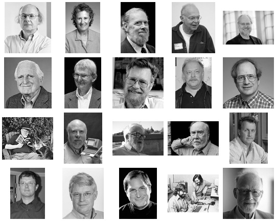

Pioneers of Computer Science
This is a partial list of notable figures in computer science.
If all these people would work together how would it change the computing industry?

Paul Graham
John McCarthy
- Homepage
- Roots of Lisp
- Lisp
- Recursive Functions of Symbolic Expressions and Their Computation by Machine
- Garbage Collection
- John McCarthy, on Philosophy of AI
- AI winter
Barbara Liskov
Gerald Jay Sussmann
- Homepage
- Flexible Systems, The Power of Generic Operations
- We Really Don’t Know How To Compute!
- Revised Report on the Propagator Model
Donald E. Knuth
Alan Kay
Rob Pike
Dennis Ritchie
Ken Thompson
Gerald M. Weinberg
Robert C. Martin
- About
- cleancoders.com
- Future of Programming
- Clean Architecture and Design
- The Last Programming Language
Douglas Crockford
- Homepage
- JavaScript: The World’s Most Misunderstood Programming Language
- How JavaScript Works
- The Post JavaScript Apocalypse
- Principles of Security
Niklaus Wirth
- Home at ETH Zürich
- A Plea for Lean Software
- Oberon
- Project Oberon - The Design of an Operating System, a Compiler, and a Computer
- Compiler Construction
- Algorithms and Data Structures